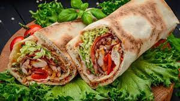
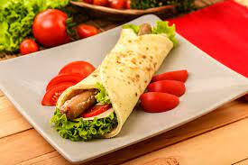

Latar Belakang Kebab
Makanan khas Timur Tengah ini menurut sejarahnya berasal dari Turki. Namun ada juga yang mengatakan dari Arab yang dikenal dengan Kabbeh. Makanan khas ini mulai meluas ketika para pedagang Turki mengadakan kontak dengan masyarakat kota Berlin, Jerman sekitar abad 18. Aslinya daging kebab dipanggang, disajikan dengan roti pita, paprika, dan saus
Apa Itu Kebab?
Kebab terdiri dari daging yang dipotong atau digiling, terkadang dengan sayuran, dan berbagai pelengkap lainnya sesuai dengan resep tertentu. Meskipun kebab biasanya dimasak dengan tusuk sate di atas api, beberapa hidangan kebab dipanggang dalam wajan di dalam oven atau disiapkan sebagai rebusan seperti tas kebab
Macam Macam Kebab
Sejumlah varian kebab itu antara lain: shish kebab, doner kebab, kathi kebab, kalmi kebab, chelow kebab, testi kebab, tika kebab, dan masih banyak lagi.
Shish Kebab
Shish Kebab merupakan kebab yang disajikan dalam bentuk tusukan seperti sate. Dalam satu tusuk shish kebab, terdapat daging, tomat, paprika, dan mentimun. Cara pembuatannya mirip seperti barbeque.
Doner Kebab
Doner Kebab yaitu daging kebab yang berputar. Kebab ini merupakan yang paling terkenal dan paling mencolok dari sebuah kedai kebab. Selain doner kebab, shawarma juga menggunakan panggangan daging yang berputar ini.
Kathi Kebab
Kebab ini dibuat dengan menggunakan tandoor atau alat pemanggang yang biasa digunakan untuk membuat tandoori chicken. Cara memasak kebab ini yaitu daging dililitkan pada tusukan tandoor kemudian dipanggang di atas bara api.
Kakori Kebab
Kebab ini berbentuk seperti sosis yang panjang. Kakori kebab terbuat dari daging cincang yang dibuat sate kemudian dibakar hingga matang.
Chapli Kebab
Jenis kebab ini seperti daging burger. Daging cincang dibuat seperti patty sehingga sering dikira daging burger. Daging yang digunakan untuk membuat kebab tidak hanya daging sapi, melainkan daging ayam, domba, ikan, unta, hingga babi. Namun, kebab dari daging babi umumnya hanya dibuat di wilayah Yunani, Laut Tengah, dan Kaukasus.
Di Indonesia, umumnya kebab berasal dari daging ayam atau sapi. Daging kebab kemudian dibungkus dengan kulit tortilla dan dipadukan dengan selada, tomat, bawang Bombay, mayonais, dan saus atau keju.
More about Kebab
Tahukah Kamu Ada Beberapa Fakta Menarik Loh Tantang Kebab,Berikut Diantaranya:
Pernah Dilarang
Di beberapa negara di Eropa, ternyata kebab pernah dilarang beredar. Salah satunya di Kota Beziers, Prancis yang melarang beredarnya kebab karena dikhawatirkan dapat mempengaruhi kebudayaan kuliner Prancis.
Kebab Bukan dari Turki
Tahukah kamu, ternyata kebab bukan berasal dari Turki, melainkan Persia dan dipopulerkan oleh tentara Turki. Kebab diperkirakan telah menyebar dari Persia ke seluruh Timur Tengah pada abad ke-8, kemudian menyebar sampai ke India pada abad ke-15. Namun pada abad ke-16, tentara Turki mulai mempopulerkan kebab ke seluruh dunia.
Dahulu Sangat Populer di Jerman
Sekitar 50 tahun yang lalu, Kadir Nurman dan Mehmet Aygun adalah imigran asal Turki yang membuka gerai kebab pertama di Berlin. Kebab diterima dan populer disantap oleh masyarakat Jerman. Jumlah kedai di Jerman melebihi jumlah kedai kebab di kota Turki yakni sekitar 40.000 kedai, lalu terdapat juga 4000 kedai kebab yang tersebar di Berlin.